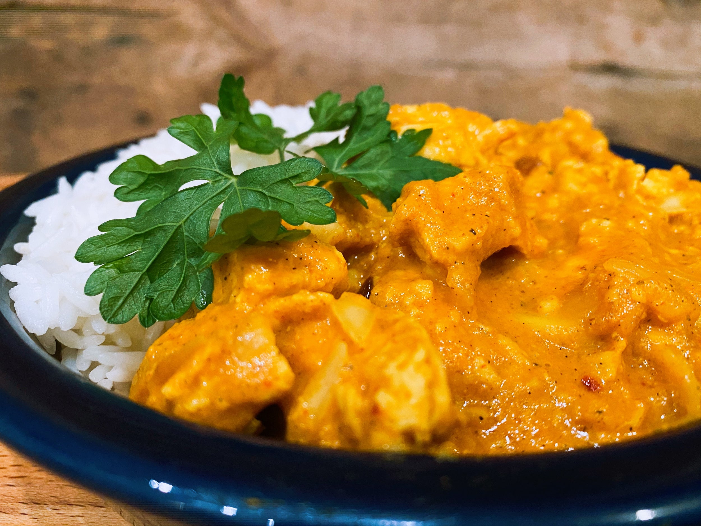
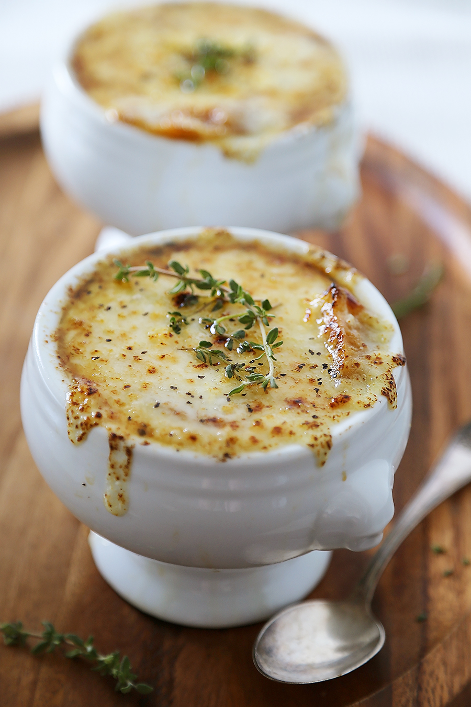
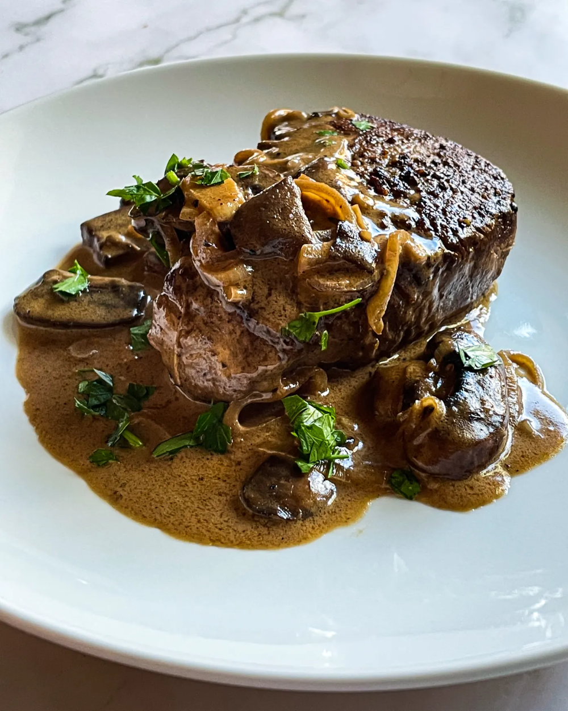

Education
I've been cooking since I was very young, and have attended a variety of junior culinary classes in Paris, London, and the US. My most notable experience was attending Le Petit Cordon Bleu in Paris, where I learned the fundamentals of French cuisine.
Indian
Indian cuisine is known for spices. I grew up eating it, and I love the variety of flavors possible within the cuisine. My favorite Indian dishes would have to be Pakora ki Kahdi, or Chicken Korma.
French
French cooking taught me the importance of technique and subtlety of flavor. My fundamentals are rooted in this cuisine, from sauces to what I know of baking. My favorite dish to make is French Onion Soup, which can be prepared in a variety of ways depending on the level of work I'm willing to put in.
80's American
I enjoy making food reminiscent of American Diners from the 1980s. From Burgers and fries to Salsbury Steak and Steak Diane, I love the strong flavors - Though I usually cut down on the portion size.